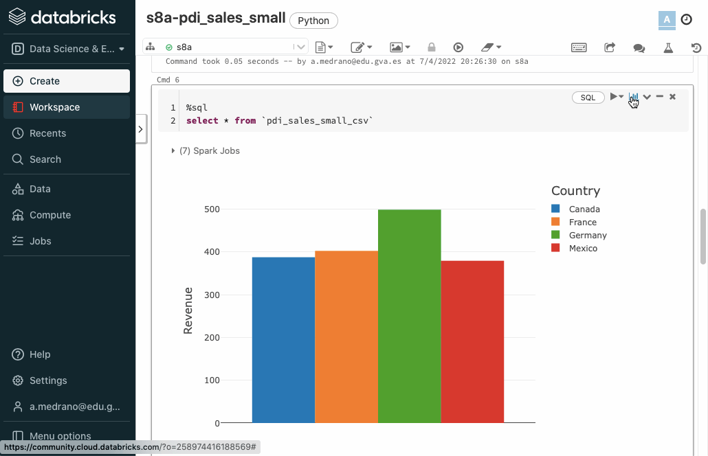
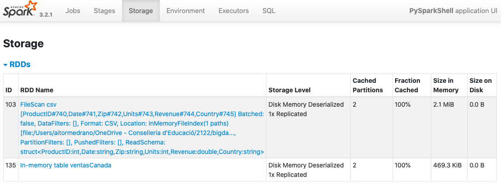
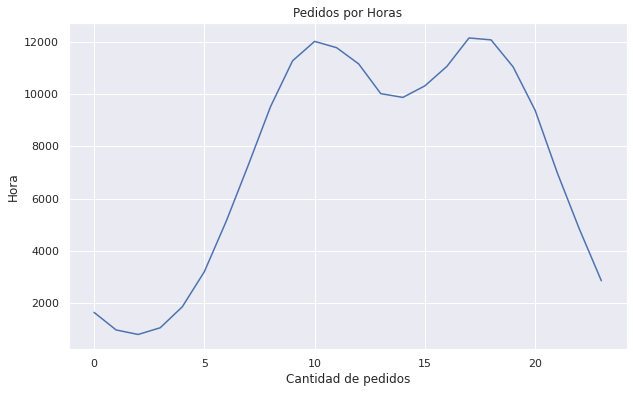

En la sesión anterior hemos introducido Spark y el uso de RDD para interactuar con los datos. Tal como comentamos, los RDD permiten trabajar a bajo nivel, siendo más cómodo y eficiente hacer uso de DataFrames y el lenguaje SQL.
Un DataFrame es una estructura equivalente a una tabla de base de datos relacional, con un motor bien optimizado para el trabajo en un clúster. Los datos se almacenan en filas y columnas y ofrece un conjunto de operaciones para manipular los datos.
El trabajo con DataFrames es más sencillo y eficiente que el procesamiento con RDD, por eso su uso es predominante en los nuevos desarrollos con Spark.
A continuación veremos cómo podemos obtener y persistir DataFrames desde diferentes fuentes y formatos de datos
El caso más básico es crear un DataFrame a partir de una SparkSession pasándole un RDD:
frompyspark.sqlimportSparkSessionspark=SparkSession.builder.getOrCreate()# SparkSession de forma programativa# Creamos un RDDdatos=[("Aitor",182),("Pedro",178),("Marina",161)]rdd=spark.sparkContext.parallelize(datos)# Creamos un DataFrame y mostramos su esquemadfRDD=rdd.toDF()dfRDD.printSchema()
Y obtenemos un resumen del esquema del DataFrame, donde para cada columna se indica el nombre, el tipo y si admite valores nulos:
Podemos ver como los nombres de las columnas son _1 y _2. Para asignarle un nombre adecuado podemos pasarle una lista con los nombres a la hora de crear el DataFrame:
Para mostrar los datos, ya hemos visto que podemos utilizar el método show, al cual le podemos indicar o no la cantidad de registros a recuperar, así como si queremos que los datos se trunquen o no, o si los queremos mostrar en vertical:
df.show(2)# +------+---------+------+------+# |nombre|apellidos|ciudad|sueldo|# +------+---------+------+------+# | Aitor| Medrano| Elche| 3000|# | Pedro| Casas| Elche| 4000|# +------+---------+------+------+# only showing top 2 rowsdf.show(truncate=False)# +------+---------+----------+------+# |nombre|apellidos|ciudad |sueldo|# +------+---------+----------+------+# |Aitor |Medrano |Elche |3000 |# |Pedro |Casas |Elche |4000 |# |Laura |García |Elche |5000 |# |Miguel|Ruiz |Torrellano|6000 |# |Isabel|Guillén |Alicante |7000 |# +------+---------+----------+------+df.show(3,vertical=True)# -RECORD 0------------# nombre | Aitor # apellidos | Medrano # ciudad | Elche # sueldo | 3000 # -RECORD 1------------# nombre | Pedro # apellidos | Casas # ciudad | Elche # sueldo | 4000 # -RECORD 2------------# nombre | Laura # apellidos | García # ciudad | Elche # sueldo | 5000 # only showing top 3 rows
Si sólo queremos recuperar unos pocos datos, podemos hacer uso de head o first los cuales devuelven objetos Row:
Lo más usual es cargar los datos desde una archivo externo. Para ello, mediante el API de DataFrameReader cargaremos los datos directamente en un Dataframe mediante diferentes métodos dependiendo del formato (admite tanto el nombre de un recurso como una ruta de una carpeta).
Para cada formato, existe un método corto que se llama como el formato en sí, y un método general que finaliza en con el método load, siempre dentro de spark.read:
dfCSV=spark.read.csv("datos.csv")dfCSV=spark.read.csv("datos/*.csv")# Una carpeta enteradfCSV=spark.read.option("sep",";").csv("datos.csv")dfCSV=spark.read.option("header","true").csv("datos.csv")dfCSV=spark.read.option("header",True).option("inferSchema",True).csv("datos.csv")dfCSV=spark.read.options(sep=";",header=True,inferSchema=True).csv("pdi_sales.csv")dfCSV=spark.read.format("csv").load("datos.csv")dfCSV=spark.read.load(format="csv",header="true",inferSchema="true").csv("datos.csv")
dfTXT=spark.read.text("datos.txt")# cada fichero se lee entero como un registrodfTXT=spark.read.option("wholetext",true).text("datos/")dfTXT=spark.read.format("txt").load("datos.txt")
Una vez vista la sintaxis, vamos a ver un ejemplo completo de lectura de un archivo CSV (el archivo pdi_sales.csv que hemos utilizado durante todo el curso) que está almacenado en HDFS y que tras leerlo, lo guardamos como JSON de nuevo en HDFS:
frompyspark.sqlimportSparkSessionspark=SparkSession.builder.appName("s8a-dataframe-csv").getOrCreate()# Lectura de CSV con el ; como separador de columnas y con encabezadodf=spark.read.option("delimiter",";").option("header","true").csv("hdfs://iabd-virtualbox:9000/user/iabd/pdi_sales.csv")# df.printSchema()df.write.json("hdfs://iabd-virtualbox:9000/user/iabd/pdi_sales_json")
Es conveniente destacar que para acceder a HDFS, únicamente hemos de indicar la URL del recurso con el prefijo hdfs:// más el host del namenode.
El esquema completo de un DataFrame se modela mediante un StructType, el cual contiene una colección de objetos StructField.
Así pues, cada columna de un DataFrame de Spark se modela mediante un objeto StructField indicando su nombre, tipo y gestión de los nulos.
Hemos visto que al crear un DataFrame desde un archivo externo, podemos inferir el esquema. Si queremos crear un DataFrame desde un esquema propio utilizaremos los tipos StructType, StructField, así como StringType, IntegerType o el tipo necesario para cada columna. Para ello, primero hemos de importarlos (como puedes observar, estas clases pertenecen a las librerías SQL de PySpark):
Además de cadenas y enteros, flotantes (FloatType) o dobles (DoubleType), tenemos tipos booleanos (BooleanType), de fecha (DateType y TimestampType), así como tipos complejos como ArrayType, MapType y StructType.
Para más información, consultar la documentación oficial.
Volvamos al ejemplo anterior donde tenemos ciertos datos de clientes, como son su nombre y apellidos, ciudad y sueldo:
La inferencia de los tipos de los datos es un proceso computacionalmente costoso. Por ello, si nuestro conjunto de datos es grande, es muy recomendable crear el esquema de forma programativa y configurarlo en la carga de datos.
Si una vez hemos cargado un DataFrame queremos cambiar el tipo de una de sus columnas, podemos hacer uso del método withColumn:
# Forma largafrompyspark.sql.typesimportDoubleTypedf=df.withColumn("sueldo",df.sueldo.cast(DoubleType())# Forma cortadf=df.withColumn("sueldo",df.sueldo.cast("double"))# df = df.withColumn("fnac", to_date(df.Date, "M/d/yyy"))
Una vez tenemos un DataFrame podemos trabajar con los datos mediante un conjunto de operaciones estructuradas, muy similares al lenguaje relacional. Estas operaciones también se clasifican en transformaciones y acciones, recordando que las transformaciones utilizan una evaluación perezosa.
Es muy importante tener en cuenta que todas las operaciones que vamos a realizar a continuación son immutables, es decir, nunca van a modificar el DataFrame sobre el que realizamos la transformación. Así pues, realizaremos encadenamiento de transformaciones (transformation chaining) o asignaremos el resultado a un nuevo DataFrame.
Preparación
Para los siguientes apartados, vamos a trabajar sobre el siguiente DataFrame con el fichero de ventas que hemos utilizado a lo largo del curso:
frompyspark.sqlimportSparkSessionspark=SparkSession.builder.appName("s8a-dataframes-api").getOrCreate()# Lectura de CSV con el ; como separador de columnas y con encabezadodf=spark.read.option("sep",";").option("header","true").option("inferSchema","true").csv("pdi_sales_small.csv")df.printSchema()
La operación select permite indicar las columnas a recuperar pasándolas como parámetros:
df.select("ProductID","Revenue").show(3)
+---------+-------+
|ProductID|Revenue|
+---------+-------+
| 725| 115.5|
| 787| 314.9|
| 788| 314.9|
+---------+-------+
only showing top 3 rows
También podemos realizar cálculos (referenciando a los campos con nombreDataframe.nombreColumna) sobre las columnas y crear un alias (operación asociada a un campo):
+---------+-----------+
|ProductID|VentasMas10|
+---------+-----------+
| 725| 125.5|
| 787| 324.9|
| 788| 324.9|
+---------+-----------+
only showing top 3 rows
Si tenemos un DataFrame con un gran número de columnas y queremos recuperarlas todas a excepción de unas pocas, es más cómodo utilizar la transformación drop, la cual funciona de manera opuesta a select, es decir, indicando las columnas que queremos quitar del resultado:
# Obtenemos el mismo resultadodf.select("ProductID","Date","Zip")df.drop("Units","Revenue","Country")
Para acceder a las columnas, debemos crear objetos Column. Para ello, podemos seleccionarlos a partir de un DataFrame como una propiedad o mediante la función col:
En ocasiones se confunde el uso de la función col con expr. Aunque podemos referenciar a una columna haciendo uso de expr, su uso provoca que se parseé la cadena recibida para interpretarla.
Para el siguiente ejemplo, supongamos que tenemos un DataFrame con datos de clientes. Utilizaremos también la función concat_ws para concatenar textos utilizado un separador.
Anteriormente hemos utilizado el método withColumn para cambiarle el tipo a un campo ya existente. Así pues, si referenciamos a una columna que ya existe, en vez de crearla, la sustituirá.
Otra forma de añadir una columna con una expresión es mediante la transformación selectExpr. Por ejemplo, podemos conseguir el mismo resultado que en el ejemplo anterior de la siguiente manera:
Aunque más adelante veremos como realizar transformaciones con agregaciones, mediante selectExpr también podemos realizar analítica de datos aprovechando la potencia de SQL:
df.selectExpr("count(distinct(ProductID)) as productos","count(distinct(Country)) as paises").show()# +---------+------+# |productos|paises|# +---------+------+# | 799| 4|# +---------+------+
Si por algún extraño motivo necesitamos cambiarle el nombre a una columna (por ejemplo, vamos a unir dos DataFrames que tienen columnas con el mismo nombre pero en posiciones diferentes, o que al inferir el esquema tenga un nombre críptico o demasiado largo y queremos que sea más legible) podemos utilizar la transformación withColumnRenamed:
Podemos utilizar los operadores lógicos (& para conjunción y | para la disyunción) para crear condiciones compuestas (recordad rodear cada condición entre paréntesis):
Una vez recuperados los datos deseados, podemos ordenarlos mediante sort u orderBy (son operaciones totalmente equivalentes):
df.select("ProductID","Revenue").sort("Revenue").show(5)df.sort("Revenue").show(5)df.sort("Revenue",ascending=True).show(5)df.sort(df.Revenue.asc()).show(5)# Ordenación descendientedf.sort(df.Revenue.desc()).show(5)df.sort("Revenue",ascending=False).show(5)frompyspark.sql.functionsimportdesc# Ordenación diferente en cada columnadf.sort(df.Revenue.desc(),df.Units.asc()).show(5)df.sort(["Revenue","Units"],ascending=[0,1]).show(5)
Por ejemplo, con la última operación obtendríamos:
Normalmente, tras realizar una ordenación, es habitual quedarse con un subconjunto de los datos. Para ello, podemos utilizar la transformación limit.
Por ejemplo, la siguiente transformación es similar al ejemplo anterior, sólo que ahora al driver únicamente le llegan 5 registros, en vez de traerlos todos y sólo mostrar 5:
La única manera de añadir filas a un DataFrame es creando uno nuevo que sea el resultado de unir dos DataFrames que compartan el mismo esquema (mismo nombres de columnas y en el mismo orden). Para ello, utilizaremos la transformación union que realiza la unión por el orden de las columnas:
nuevasVenta=[(6666,"2022-03-24","03206",33,3333.33,"Spain"),(6666,"2022-03-25","03206",22,2222.22,"Spain"),]# Creamos un nuevo DataFrame con las nuevas VentasnvDF=spark.createDataFrame(nuevasVenta)# Unimos los dos DataFramesdfUpdated=df.union(nvDF)
Si necesitamos recoger un subconjunto de los datos, ya sea para preparar los datos para algún modelo de machine learning como para una muestra aleatoria de los mismos, podemos utilizar las siguientes transformaciones:
sample permite obtener una muestra a partir de un porcentaje (no tiene porqué obtener una cantidad exacta). También admite un semilla e indicar si queremos que pueda repetir los datos.
Si queremos saber si una columna contiene nulos, podemos hacer un filtrado utilizando el método isNull sobre los campos deseados (también podemos utilizar isNotNull si queremos el caso contrario):
Para trabajar con las filas que contengan algún dato nulo, podemos acceder a la propiedad na, la cual devuelve un DataFrameNaFunctions sobre la que podemos indicarle:
que la elimine mediante el método drop / dropna. Puede recibir "any" (borrará las filas que contengan algún nulo) o "all" (borrará las filas que todas sus columnas contengan nulos) y una lista con las columnas a considerar:
# Elimina todos los nulosmalDF.na.drop().show()# +---------+----------+-----+-----+-------+-------+# |ProductID| Date| Zip|Units|Revenue|Country|# +---------+----------+-----+-----+-------+-------+# | 6666|2022-03-22|03206| 33|3333.33| Spain|# +---------+----------+-----+-----+-------+-------+# Elimina las filas que todas sus columnas son nulasmalDF.na.drop("all").show()# +---------+----------+-----+-----+-------+-------+# |ProductID| Date| Zip|Units|Revenue|Country|# +---------+----------+-----+-----+-------+-------+# | 6666|2022-03-22|03206| 33|3333.33| Spain|# | 6666|2022-03-22| null| 33|3333.33| Spain|# | 6666|2022-03-23|03206| null|2222.22| Spain|# | 6666|2022-03-24|03206| null| null| Espain|# +---------+----------+-----+-----+-------+-------+# Elimina las filas que tienen el Zip nulomalDF.na.drop(subset=["Zip"]).show()# +---------+----------+-----+-----+-------+-------+# |ProductID| Date| Zip|Units|Revenue|Country|# +---------+----------+-----+-----+-------+-------+# | 6666|2022-03-22|03206| 33|3333.33| Spain|# | 6666|2022-03-23|03206| null|2222.22| Spain|# | 6666|2022-03-24|03206| null| null| Espain|# +---------+----------+-----+-----+-------+-------+
También podemos indicar la cantidad de nulos que ha de contener cada fila para eliminarla mediante el parámetro thresh:
# Elimina las filas con 3 o más nulosmalDF.dropna(thresh=3)
que la rellene mediante el método fill / fillna, indicando el valor y si queremos, sobre qué columnas aplicar la modificación:
Otro caso muy común es realizar una operación sobre una columna para transformar su valor, por ejemplo, pasar todo el texto a minúsculas o dividir una columna entre 100 para cambiar la escala.
En nuestro caso, vamos a modificar las columnas Zip y Country para realizar un trim y borrar los espacios en blanco:
En la era del big data, SQL es la lengua franca, permitiendo a perfiles con pocos conocimientos de programación trabajar de forma eficiente con los datos (siempre poniendo el foco en la analítica de datos, no en el procesamiento transaccional).
Spark soporta el ANSI SQL 2003, ampliamente establecido en el mundo de las bases de datos.
Para correr SQL en Spark podemos hacerlo a través de:
El cliente SQL, es cual se ofrece como un comando en ./bin/spark-sql
Mediante un servidor ODBC/JDBC
De forma programativa mediante aplicaciones Spark.
Las dos primeras opciones se integran con Apache Hive para utilizar su metastore. Ahora nos vamos a centrar en la última.
Ya hemos visto que los DataFrames tienen una estructura similar a una tabla de una base de datos relacional. Para poder realizar consultas, necesitaremos crear vistas temporales mediante el método createOrReplaceTempView para posteriormente realizar una consulta sobre la vista creada a través de spark.sql:
# 1. definimos la vistadf.createOrReplaceTempView("ventas")# 2. realizamos la consultaventasCanada=spark.sql("select * from ventas where trim(Country)='Canada'")ventasCanada.show(3)# +---------+---------+---------------+-----+-------+-------+# |ProductID| Date| Zip|Units|Revenue|Country|# +---------+---------+---------------+-----+-------+-------+# | 725|1/15/1999|H1B | 1| 115.4|Canada |# | 2235|1/15/1999|H1B | 2| 131.1|Canada |# | 713|1/15/1999|H1B | 1| 160.1|Canada |# +---------+---------+---------------+-----+-------+-------+# only showing top 3 rows
Las vistas temporales tienen un alcance de SparkSession, de manera que desaparecen una vez finalice la sesión que ha creado la vista. Si necesitamos tener una vista que se comparta entre todas las sesiones y que permanezca viva hasta que la aplicación Spark finalice, podemos crear una vista temporal global.
Estas vistas se almacenan en la base de datos global_temp y en las consultas es necesario poner el prefijo global_temp para acceder a la sus vistas.
# 1. definimos la vista globaldf.createOrReplaceGlobalTempView("ventasg")# 2. realizamos la consultaventasCanadaG=spark.sql("select * from global_temp.ventasg where trim(Country)='Canada'")ventasCanadaG.show(3)# +---------+---------+---------------+-----+-------+-------+# |ProductID| Date| Zip|Units|Revenue|Country|# +---------+---------+---------------+-----+-------+-------+# | 725|1/15/1999|H1B | 1| 115.4|Canada |# | 2235|1/15/1999|H1B | 2| 131.1|Canada |# | 713|1/15/1999|H1B | 1| 160.1|Canada |# +---------+---------+---------------+-----+-------+-------+# only showing top 3 rows# Creamos otra sesión y vemos como funcionaspark.newSession().sql("select count(*) from global_temp.ventasg where trim(Country)='Canada'").show()
Spark permite crear bases de datos y tablas y almacenar los datos y metadatos en estructuras similares a como lo realiza Hive en un metastore central. De esta manera, vamos a poder crear tablas gestionadas y no gestionadas.
Para organizar las tablas y las vistas, es recomendable crear una base de datos. De la misma manera que hemos creado sentencias SQL, podemos generar sentencias DML:
spark.sql("create database if not exists s8a")spark.sql("use database s8a")
Si queremos consultar las bases de datos existentes podemos:
Si queremos crear una tabla no gestionada, también conocida como tabla externa, necesitamos indicar la ruta de los datos en el momento de creación:
spark.sql("""CREATE TABLE ventase(ProductID INT, Date STRING, Zip STRING, Units INT, Revenue DOUBLE, Country STRING) USING csv OPTIONS (PATH '/pdi_sales_small.csv')""")
Para ello, necesitamos colocar el archivo de datos dentro del almacén de metastore, que en nuestro caso es spark-warehouse/s8a.db/
También podemos crear la tabla indicando la opción path:
En la sesión anterior ya vimos como crear RDDs con Databricks. En esta ocasión, vamos a trabajar mediante DataFrames y SQL para ver toda la flexibilidad que nos aporta.
Una vez creado de nuevo el cluster, vamos a cargar los datos mediante la opción Data, subiendo el archivo pdi_sales_small.csv:
Subiendo datos a Databricks
Una vez cargado el archivo, pulsamos sobre el botón Create table in notebook de manera que nos crea un cuaderno Jupyter donde podemos consultar los datos y crear una vista temporal:
Cargados los datos en un DataFrame
Para que funcione correctamente con nuestro datos, vamos a modificar el código:
Si volvemos a ejecutar el cuaderno, ahora sí que cargará correctamente los datos. Si nos vamos a la celda que realiza una consulta sobre todos los datos, podemos ver en la parte superior derecha como el lenguaje empleado en la celda es SQL, por ello la primera línea comienza con %sql, y a continuación ya podemos introducir directamente código SQL, teniendo la opción de visualizar los datos tanto en modo texto como mediante gráficos:
Si pulsamos sobre el icono del gráfico de barras de la esquina superior derecha de una celda SQL, podemos añadir el resultado de la celda a un dashboard:

Creando un cuadro de mandos
Una vez creado, sólo tenemos que seleccionar las celdas que queramos, e ir añadiéndolas al cuadro de mandos creado. Posteriormente, podemos abrirlo, resituar los elementos y visualizarlo:
Una vez tenemos un DataFrame, podemos realizar analítica de datos sobre el dataset entero, o sobre una o más columnas y aplicar una función de agregación que permita sumar, contar o calcular la media de cualquier grupo, entre otras opciones.
Para ello, PySpark ofrece un amplio conjunto de funciones. En nuestro caso, vamos a realizar algunos ejemplos para practicar con las funciones más empleadas.
approx_count_distinct / approxCountDistinct: Devuelve aproximadamente la cantidad de elementos no nulos diferentes (puede recibir un segundo parámetro la máximo desviación estándar admitida). Este método es mucho más rápido que contar exactamente el número de resultado, y para datasets muy grandes, en ocasiones puede ser útil:
Si nos interesa obtener información estadística sobre los datos, también disponemos de las funciones skewness, kurtosis, variance, var_pop, stddev y stddev_pop.
Si agrupamos varias columnas de tipo categóricas (con una cardinalidad baja), podemos realizar cálculos sobre el resto de columnas.
Sobre un DataFrame, podemos agrupar los datos por la columna que queramos utilizando el método groupBy, el cual nos devuelve un GroupedData, sobre el que posteriormente realizar operaciones como avg(cols), count(), mean(cols), min(cols), max(cols) o sum(cols):
En ocasiones necesitamos agrupar en una colección todos los valores para un grupo en particular. Para ello, podemos usar collect_list (con repetidos) o collect_set (sin repeticiones):
Por ejemplo, para cada país, vamos a recuperar un listado con los códigos postales de aquellos pedidos que hayan superado las 5 unidades:
Las tablas pivote permite obtener un resumen de los datos a partir de columnas categóricas sobre la que realizar cálculos, tal como se hace en las hojas de cálculo con las tablas dinámicas.
Por ejemplo, vamos a obtener la cantidad recaudada por las ventas de cada año por cada pais:
Hasta ahora todo la analítica la hemos realizado sobre un único DataFrame. Aunque si seguimos un proceso ELT es probable que tengamos todos los datos en un único lugar, en ocasiones necesitamos cruzar la información de dos datasets.
Si nos basamos en el planteamiento de una base de datos relacional, Para unir dos DataFrames necesitamos unir la clave ajena de uno con la clave primaria del otro.
Para estos ejemplos, vamos a cambiar de datasets y utilizar datos de vuelos de avión que han tenido algún tipo de retraso (departure_delays.csv) y otro con los códigos de los aeropuertos (airport-codes-na.tsv).
Si queremos hacer un join mediante SQL, sólo tenemos que emplear la misma sintaxis que con cualquier sistema relacional, de manera que primero crearemos las vistas temporales y luego realizaremos la consulta:
df_vuelos.createOrReplaceTempView("vuelos")df_aeropuertos.createOrReplaceTempView("aeropuertos")df_join=spark.sql("select v.*, a.City as originCity, b.City as destinationCity from vuelos v JOIN aeropuertos a on v.origin == a.IATA join aeropuertos b on v.destination = b.IATA")# df_join.count() # 1361141df_join.show(3)# +-------+-----+--------+------+-----------+----------+---------------+# | date|delay|distance|origin|destination|originCity|destinationCity|# +-------+-----+--------+------+-----------+----------+---------------+# |1011245| 6| 602| ABE| ATL| Allentown| Atlanta|# |1020600| -8| 369| ABE| DTW| Allentown| Detroit|# |1021245| -2| 602| ABE| ATL| Allentown| Atlanta|# +-------+-----+--------+------+-----------+----------+---------------+# only showing top 3 rows
Si tuviéramos algún vuelo con algún código que no tuviéramos disponible en el dataset con los códigos de aeropuertos no nos aparecería. Por tanto, sería más conveniente realizar un left join:
df_left_join=spark.sql("select v.*, a.City as originCity, b.City as destinationCity from vuelos v LEFT JOIN aeropuertos a on v.origin == a.IATA LEFT JOIN aeropuertos b on v.destination = b.IATA")df_left_join.show(3)df_left_join.count()# 1391578
Un caso particular que conviene conocer es el left anti join. Este tipo de join permite obtener aquellos registros de la izquierda que no aparecen en la parte derecha, de manera que si seguimos con el ejemplo, podemos recuperar aquellos vuelos cuyos aeropuertos no tenemos en el dataset con los códigos:
df_left_anti_join=spark.sql("select * from vuelos v LEFT ANTI JOIN aeropuertos a ON v.origin == a.IATA ")df_left_anti_join.count()# 14416
Si las columnas que unen los DataFrames tienen el mismo nombre, podemos simplificar el código indicando únicamente su nombre:
df1.join(df2,"user_id")
Además, si queremos hacer un inner join, podemos no indicarlo ya que es el tipo por defecto.
Como en nuestro caso, teníamos dos joins, tanto para los vuelos de origen como los de destino, necesitamos volver a unir:
frompyspark.sql.functionsimportcol# le indicamos alias a los campos para eliminar ambigüedadesdf_joinp2=(df_joinp1.alias("a")).join((df_aeropuertos.alias("b")),col("a.destination")==col("b.IATA"),"inner")df_joinp2.count()# 1361141
En vez de pasarle inner, le podemos indicar el tipo de join: left, right, cross, left_anti, etc...
Para dominar realmente Spark, hay que tener destreza en todas las funciones existente para el tratamiento de fechas, cadenas, operaciones matemáticas, para trabajar con colecciones, etc...
Además, siempre podemos crear nuestras propias funciones de usuario para ampliar el lenguaje.
Aunque ya hemos utilizado algunas a lo largo de los apuntes, a continuación vamos a repasar las funciones más empleadas.
Otras funciones que se suelen utilizar son concat y concat_ws para unir cadenas, levenshtein para calcular la distancia entre dos cadenas, lpad y rpad para completar con espacios, etc... Si necesitas trabajar con expresiones regulares puedes utilizar regexp_extract para extraer parte de una cadena como regexp_replace para sustituir.
Para probar las funciones que trabajan con colecciones, vamos a cambiar de dataset y trabajar con uno compartido por Kaggle con datos de negocios de Yelp que tenemos almacenados en una versión reducida en yelp_academic_dataset_business.json. Los negocios tienen una propiedad denominada categories que contiene un array con las categorías de los mismos:
persons.json
{"business_id":"O_X3PGhk3Y5JWVi866qlJg","full_address":"1501 W Bell Rd\nPhoenix, AZ 85023","hours":{"Monday":{"close":"18:00","open":"11:00"},"Tuesday":{"close":"18:00","open":"11:00"},...},"open":true,"categories":["Active Life","Arts & Entertainment","Stadiums & Arenas","Horse Racing"],"city":"Phoenix",...}
El primer paso es cargar el documento y ver el esquema leído por Spark:
Recuerda que en el apartado Agrupando colecciones vimos como podemos crear colecciones al realizar una agrupación.
Así pues, además del nombre, hemos obtenido el horario de los domingos utilizando la notación . para acceder a los campos anidados, la cantidad de categorías de cada comercio, un listado ordenado con sus categorías y finalmente si es un restaurante.
Otro tipo de operación que podemos realizar es desenrollar una colección mediante la función explode y generar una fila nueva por cada elemento de la colección:
df.select("name",explode("categories")).show(10,truncate=False)# +-------------------------+--------------------+# |name |col |# +-------------------------+--------------------+# |Turf Paradise Race Course|Active Life |# |Turf Paradise Race Course|Arts & Entertainment|# |Turf Paradise Race Course|Stadiums & Arenas |# |Turf Paradise Race Course|Horse Racing |# |Sam's Club Members Only |Tires |# |Sam's Club Members Only |Automotive |# |Sam's Club Members Only |Fashion |# |Sam's Club Members Only |Shopping |# |Sam's Club Members Only |Department Stores |# |Forever 21 |Women's Clothing |# +-------------------------+--------------------+# only showing top 10 rows
Es común que se de el caso de que los datos que leemos desde un sistema externo estén en formato JSON pero que el proceso de ingesta lo haya realizado como si fuera una cadena de texto.
Supongamos que tenemos la siguiente cadena y generados un DataFrame a partir de un RDD:
tareas=["""{"dia": "Lunes", "tareas": ["Corregir ejercicios", "Ir a nadar", "Comprar pan"]}"""]# ['{"dia": "Lunes", "tareas": ["Corregir ejercicios", "Ir a nadar", "Comprar pan"]}']tareasRDD=spark.sparkContext.parallelize(tareas)tareasStrDF=tareasRDD.toDF("string")# tareasStrDF es un DF con una columna con nombre value de tipo stringtareasStrDF.printSchema()# root# |-- value: string (nullable = true)tareasStrDF.show()# +--------------------+# | value|# +--------------------+# |{"dia": "Lunes", ...|# +--------------------+
Para pasarlo a JSON, necesitamos definir un esquema con la estructura del documento JSON:
Para terminar, si necesitamos la operación inversa, y lo que queremos es crear una representación JSON de una columna, podemos utilizar la función getItem:
Además de las funciones que ofrece Spark, en cualquier momento podemos crear nuestras funciones de usuario (User-Defined Functions) para ampliar la expresividad de Spark. Antes de utilizarlas, las hemos de definir y registrar.
Si volvemos al dataset de ventas, teníamos la siguiente información:
Vamos a crear una función para que, si vende más de una unidad, se le asigne a cada producto un bonus de un 1%. Para ello, primero definiremos la función mediante Python, y posteriormente, la registraremos mediante la función udf:
Si queremos definir la función para poder utilizarla dentro de Spark SQL y obtener el mismo resultado, hemos de registrar la función mediante spark.udf.register, la cual recibe el nombre que le asignaremos a la función, el nombre de la función Python a invocar, y el tipo de dato que devuelve:
spark.udf.register("udfBonus",bonus,DoubleType())spark.sql("select ProductID, Revenue, Units, udfBonus(Units, Revenue) as bonus from ventas order by Units desc").show(5)
UDF y Python
En un principio, se desaconseja la creación de UDF mediante Python, ya que su uso penalizar de forma significativa el rendimiento.
Los ejecutores son procesos en máquinas virtuales de Java que están escritos en Java, y por ello, ejecutan código Java o Scala de forma nativa. En cambio, para Python tiene que ejecutar un proceso separado para ejecutar la UDF, lo que implica un coste extra para serializar y volver a deserializar los datos para cada fila del dataset.
Un DataFrame se puede persistir/cachear en memoria conforme necesitemos (también lo podemos hacer con los RDD). Su principal propósito es cuando vamos a acceder a un DataFrame una y otra vez y no necesitamos que se vuelvan a evaluar todas las operaciones (como pueden ser los algoritmos iterativos utilizados en Machine Learning).
Cuando persistimos un dataset, cada nodo almacena sus datos particionados en memoria y/o disco y los reutiliza en otras operaciones sobre dicho dataset.
Para ello, se emplean los métodos cache / persist y unpersist para cachear y liberar los datos.
df.persist()df.count()# forzamos la evaluación perezosa
Una vez persistidos los datos, si accedemos a http://localhost:4040 veremos en la pestaña Storage que se ha creado la tabla, su tipo de almacenamiento y particiones cacheadas:

Elementos cacheados con Spark UI
Una diferencia fundamental a la hora de persistir un DataFrame en comparación con un RDD, es que como Spark SQL conoce el esquema de los datos en el DataFrame, puede organizarlos de forma columnar y aplicar compresión sobre éstos para minimizar el espacio necesario.
Nos traemos esos datos a Pandas mediante el método .toPandas().:
pdVC=dfVotosCiudades.toPandas()
A partir de este momento pdVC es un DataFrame de Pandas:
Conversión a un DataFrame de Pandas
Y con el DataFrame de Pandas, ya podemos generar gráficos:
importpandasaspdimportmatplotlib.pyplotaspltimportseabornassnsplt.figure(figsize=(10,6))plt.ticklabel_format(useOffset=False,style="plain")sns.set_theme(style="whitegrid")sns.barplot(x="votos",y="city",data=pdVC).set_title("Votos por Ciudad")plt.xlabel("Votos emitidos")plt.ylabel("Ciudades")plt.show()
Mucho cuidado al utilizar Pandas, ya que al convertir el DataFrame nos vamos a traer todos los datos al driver, perdiendo la distribución de los datos y pudiendo provocar un error de falta de memoria.
Así pues, hay que evitar a toda costa utilizar Pandas para tratar los datos, ya que perdemos toda la potencia de trabajo en clúster (Pandas sólo puede utilizar los recursos del nodo principal). Únicamente lo utilizaremos cuando vayamos a visualizar los datos mediante Matplotlib / Seaborn como requisito de estas librerías.
A partir del archivo nombres.json, crea un DataFrame y realiza las siguientes operaciones:
Crea una nueva columna (columna Mayor30) que indique si la persona es mayor de 30 años.
Crea una nueva columna (columna FaltanJubilación) que calcule cuantos años le faltan para jubilarse (supongamos que se jubila a los 67 años)
Crea una nueva columna (columna Apellidos) que contenga XYZ (puedes utilizar la función lit)
Elimina las columna Mayor30 y Apellidos?
Crea una nueva columna (columna AnyoNac) con el año de nacimiento de cada persona (puedes utilizar la función current_date).
Añade un id incremental para cada fila (campo Id) y haz que al hacer un show se vea en primer lugar (puedes utilizar la función monotonically_increasing_id) seguidos del Nombre, Edad, AnyoNac, FaltaJubilacion y Ciudad
Al realizar los seis pasos, el resultado del DataFrame será similar a :
Las ventas nulas por la media de las ventas de los compañeros(redondeado a entero).
Los euros nulos por el valor del compañero que menos € ha ganado
La ciudad nula por C.V.
El identificador nulo por XYZ
Para los pasos ii) y iii) puedes crear un DataFrame que obtenga el valor a asignar y luego pasarlo como parámetro al método para rellenar los nulos.
A partir del archivo movies.tsv, crea una esquema de forma declarativa con los campos:
interprete de tipo string
pelicula de tipo string
anyo de tipo int
Cada fila del fichero implica que el actor/actriz ha trabajado en dicha película en el año indicado.
Una vez creado el esquema, carga los datos en un DataFrame.
¿Cuantas películas diferentes hay?
¿En cuantas películas ha trabajado Murphy, Eddie (I)?
Muestra los intérpretes que aparecen tanto en Superman como en Superman II.
¿Cuáles son los actores que han aparecido en más de 30 películas?
¿En que película anterior a 1980 aparecen al menos 25 intérpretes?
Muestra la cantidad de películas producidas cada año (solo debe mostrar el año y la cantidad), ordenando el listado por la cantidad de forma descendente.
A partir de la consulta anterior, crea un gráfico de barras que muestre el año y la cantidad de películas, ordenados por fecha.
Vamos a seguir realizando analíticas de datos sobre las películas, ya que nos han enviado un nuevo archivo llamado movie-ratings.tsv que contiene las calificaciones de las películas.
Crea un DataFrame que contenga los datos de ambos datasets.
Muestra para cada año, la película con mayor puntuación (año, título de la película, puntuación)
Sobre los datos anteriores, obtén también una lista con los nombres de los intérpretes.
Averigua las tres parejas de intérpretes han trabajado juntos en más ocasiones. La salida debe tener tres columnas: interprete1, interprete2 y cantidad. (necesitas utilizar un self-join)
Hemos recibido un dataset con las ventas de 2019 de una tienda americana de productos de tecnología, mediante un conjunto de ficheros en formato CSV comprimidos en salesdata.zip.
Una vez descomprimidos los datos, crea un DataFrame con todos los datos, infiriendo el esquema.
Vuelve a realizar la lectura de los datos pero con el siguiente esquema:
Tras la lectura, vamos a realizar la limpieza de datos. El primer paso será renombrar la columnas para eliminar los espacios en blanco.
Elimina las filas que contengan algún campo nulo.
Comprueba si las cabeceras de los archivos aparecen como datos del dataset (por ejemplo, un producto cuyo nombre sea Product). Si fuera el caso, elimina dichas filas.
A partir del campo dirección, crea dos nuevas columnas para almacenar la ciudad (City) y el estado (State). Por ejemplo, para la dirección 136 Church St, New York City, NY 10001, la ciudad es New York City y el estado es NY.
Modifica el campo con la fecha del pedido para que su formato sea timestamp.
Sobre el campo anterior, crea dos nuevas columnas, con el mes (Month) y el año (Year) del pedido.
Almacena los datos en formato Parquet en la carpeta salesoutput particionando los datos por año y mes. Tras ejecutar esta operación, comprueba en disco la estructura de archivos creada.
Sobre los datos almacenados, realiza una nueva lectura pero solo leyendo los datos de 2019 los cuales deberían estar almacenados en ./salesdataoutput/Year=2019.
Averigua cual ha sido el mes que ha recaudado más. Para ello, deberás multiplicar el precio por la cantidad de unidades, y posteriormente, realizar alguna agregación. Sobre el resultado, crea un gráfico similar al siguiente:
Ventas por mes
Obtén un gráfico con las 10 ciudades que más unidades han vendido.
Ciudades con más unidades vendidas
Cantidad de pedidos por Horas en las que se ha realizado un pedido que contenía al menos dos productos:

Pedidos de al menos dos productos por horas
Listado con los productos del estado de NY que se han comprado a la vez, obteniendo un resultado similar a: